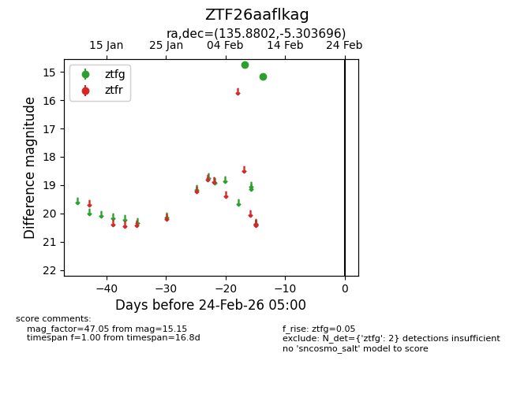
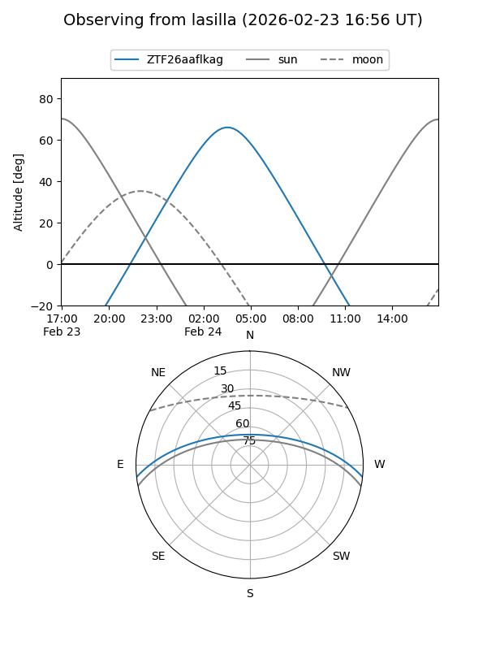
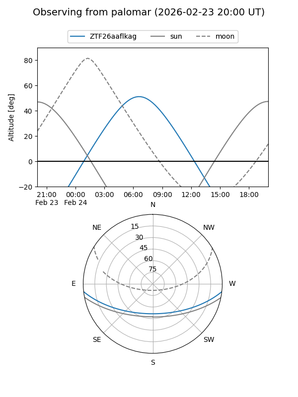

ZTF26aaflkag
Target ZTF26aaflkag at 2026-02-24 09:08
Aliases and brokers:
FINK: link
Lasair: link
ALeRCE: link
alt names
ZTF26aaflkag (ztf,fink_ztf)
Coordinates:
equatorial (ra, dec) = 135.8802,-5.30370
equatorial (HMS+DMS) = 09:03:31.25,-05:18:13.31
galactic (l, b) = (234.4805,+26.15284)
Flags:
Photometry:
last ztfg=15.15
2 ztfg detections
Lightcurve

Visibility


Additional plots